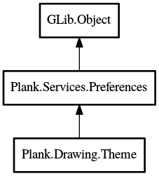

Theme
Object Hierarchy:

Description:
public abstract class Theme :
Preferences
A themed renderer for windows.
Content:
Constants:
Properties:
Static methods:
- public static void draw_rounded_rect (
Context cr, double x, double y, double width, double height, double top_radius = 6.0, double bottom_radius = 6.0, double line_width = 1.0)
Draws a rounded rectangle. If compositing is disabled, just draws a
normal rectangle.
- public static void draw_rounded_line (
Context cr, double x, double y, double width, double height, bool is_round_left, bool is_round_right, Pattern? stroke = null, Pattern? fill = null)
Draws a rounded horizontal line.
- public static
ArrayList<string> get_theme_list ()
Get a sorted list of all available theme-names
- public static
File? get_theme_folder (string name)
Try to get an already existing folder located in the themes folder
while prefering the user's themes folder. If there is no folder found we fallback to the "Default" theme. If even that folder
doesn't exist return NULL (and use built-in defaults)
Creation methods:
Methods:
- protected override void reset_properties ()
- public void load (
string type)
Loads a theme for the renderer to use.
- public
int get_top_offset ()
Returns the top offset.
- public
int get_bottom_offset ()
Returns the bottom offset.
- public void draw_background (DockSurface surface)
Draws a background onto the surface.
- protected void draw_inner_rect (
Context cr, int width, int height)
Similar to draw_rounded_rect, but moves in to avoid a containing
rounded rect's lines.
- protected override void verify (
string prop)
Inherited Members:
All known members inherited from class Plank.Services.Preferences
All known members inherited from class GLib.Object
- @new
- newv
- new_valist
- get_type
- get_class
- @ref
- unref
- ref_sink
- weak_ref
- weak_unref
- add_weak_pointer
- remove_weak_pointer
- @get
- @set
- get_property
- set_property
- get_data
- set_data
- set_data_full
- steal_data
- get_qdata
- set_qdata
- set_qdata_full
- steal_qdata
- freeze_notify
- thaw_notify
- dispose
- constructed
- notify_property
- connect
- disconnect
- add_toggle_ref
- remove_toggle_ref
- bind_property
- notify
- ref_count